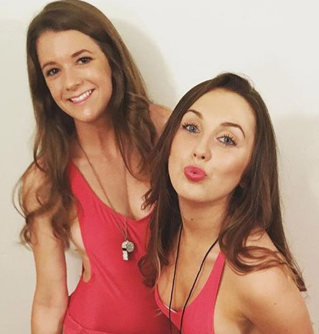

Здравейте! Момичета, искам да споделя моята щастлива новина - съпругът ми каза вчера, че мисли за третото дете. Но преди шест месеца бяхме на прага на развода, можете ли да си представите. Ситуацията беше спасена от случайна среща с приятел и .. малка тубичка от крем против стареене . Но първо всичко наред..
Пътят от кралицата на красотата до грозната
В колежа бях най-хубавото момиче. Приятелките бяха страшно ревниви - къдрава черна коса, гърди с трети размер, тясна талия, хубаво лице … А еще я практически не красилась, ведь даже в период ПМС кожа оставалась свежей и сияющей, без единого прыщика. Момчетата полудяха по тази природна красота, а аз ходих на дати почти всяка вечер. Но това е така, пързалка, нищо сериозно.
Но един ден момче се премести в нашата група. Красив и мълчалив, той седеше в мислите си през цялото време и какъв срам, изобщо не ми обърна внимание. Но нещо щракна в мен! Винаги съм имала слабост към такива сурови мъже, затова реших да действам. Промених малко стила на дрехите и вместо поли, покривайки задника, започнах да носа дълги ежедневни рокли, започнах да чета повече. И когато се натъкнах на него на парти, небрежно хвърлих фраза на любимия му писател - и разговаряхме до сутринта, не забелязвайки никого. И от този момент нататък ние никога не се разделихме. Бях изумен колко страстни бяха отношенията ни, защото на пръв поглед Венцислав беше студен и сдържан. След няколко месеца започнахме да живеям заедно, после годежът, сватбата ... И сега нашите две малки копия се движат около хола - Анелия и Емилия.
И всичко би било абсолютно готино, ако не поради едно обстоятелство - промених се много. Два декрета си свършиха работата - гърдите провиснаха, талията изчезна, кожата се влоши. Понякога, докато съпругът ми беше на работа, бих отворила албум със студентски снимки и не можех да сдържа сълзи. Аз съм в огледалото и аз на тези снимки съм двама различни хора. Видях, че Венцислав започва да се отнася към мен по различен начин, изчезва на работа, отказва секс. Не го обвинявам, защото дори не бих искал да бъда такъв. Не ми останаха приятели, защото в началото бях очарована от Венцислав и веднага щом момичетата се появиха, всичките ми излети от вкъщи са за разходка с дъщерите ми или до магазина за торти. И за да бъда честна, ще ме е срам да се срещам със стари познати под тази форма … Но един ден, връщайки се от магазина със съпруга ми, се запознахме с неговия колега и той ме обърка за мама Венцислав !!! Какво може да бъде по-унизително за една жена? Струва ми се нищо. И реших да действам.
Опитах всичко, за да не загубя любимия си човек
Започнах да правя някои упражнения вкъщи и с дъщерите ми, вместо да гледаме карикатури, започнахме да играем топка или бадминтон в парка. Ревизирах и храненето. Оказа се по-лесно, отколкото си мислех, защото винаги съм готвила добре, а сега в интернет можете да намерите много прости рецепти. Като цяло теглото започна да отминава. И след 8 месеца се върнах в нормалното си състояние. Разбира се, годините отнемат своето и тялото не е било същото като в колежа. Опитах се с всички сили да премахна целулита и по някакъв начин да намаля стрии, докато един ден в стаята за монтаж не видях лицето си отблизо. Да, видях го, защото през последните месеци гледам изключително под врата. Изчерпана жена на около 50 години ме гледаше - лицето й беше покрито с бръчки и някакви петна, торбички под очите, кожата беше отпусната и сива, дори контурът на лицето плуваше. Току-що се обърнах - това ли е резултат от бързото отслабване или просто бях такъва, само на фона на наднорменото тегло, проблемите с лицето не бяха толкова забележими?
Ужасен, изтичах от помещението за монтаж, така и не купих онова луксозно неглиже, за което тя дойдех. И разбира се, това беше идеалният момент да се запознаем с приятел от колежа - пазаруваше в същия магазин за бельо. Емануела никога не беше красива, но сега изглеждаше просто великолепно, особено срещу мен. Говорихме за това и онова, спомняйки си нашите, показвахме един на друг снимки на деца. И разбира се, попита тя,как е Венцислав. Въздъхнах и казах, че кариерата му се е откъснала и дори е мислил да отвори частна практика. Абсолютно не исках да говоря за нашите семейни проблеми, особено като се има предвид, че по едно време тя също беше влюбена във Венцислав. И тогава забелязах в очите й недоумение и някакво ... жалко. Жалост към мен. Приятелката попита какво се е случило с огненото момиче, което бях в колеж. И добави, че едва ли ме познава.
Бях благодарна за нейната честност, затова попитах дали ще ми препоръча някакъв плътен BB крем, който да скрие поне част от бръчките ми. Както се оказва, това действа само при акне и пигментация и никоя основа не крие възрастови промени в кожата. Но за щастие за мен Емануела продължи и говори за продукт за грижа за кожата, който й помага да изглежда дори по-готино, отколкото когато беше на 20.
Така разбрах за . Няма да кажа, че го поръчах с голям ентусиазъм, тъй като не вярвам силно в прости решения на някакви проблеми, но нямаше какво да губя, тъй като след няколко месеца съпругът ми планираше голям корпоративен излет със съпругите си. Препоръката на стара приятелка вдъхна увереност и състава - хиалуронова киселина, колаген, всякакви витамини … Изглежда като обикновен крем, но за моя изненада тенът се промени след седмица употреба. Вместо земност - свеж поглед и румени бузи. И след месец големи мимически бръчки започнаха да се изглаждат, а малките изчезнаха напълно. Пигментацията също е нещо от миналото. Най-голямата ми Анелия започна да казва, че има най-красивата майка. Но най-хубавото е, че съпругът ми започна да се връща вкъщи рано от работа и ме кани на истински дати. Дългоочакваното корпоративно парти мина добре, изглеждахме като холивудска двойка. Разбира се, не забравям за Емануела и нейната роля във всичко това, защото съветите й спасиха моето самочувствие, а може би и моят брак. Установихме комуникация с нея и отново отиваме на кафе и пазаруване, където обменяме всякакви тайни за красота.

Момичета, не забравяйте себе си! Отглеждането на деца, почистването, храненето на съпруга е много важно, да. Но е много по-важно да останеш жена, секси и с блясък в очите. Спрете да разчитате и да губите семейния си бюджет за нищо, само не за себе си. Купете си същата абонамент за танци или крем против стареене. Когато една жена е красива и доволна, всички се възползват от това!
Гледаш ли се или се отказваш? Какво правите от процедурите за грижи?
P.S.: Отговарям на най-често срещания въпрос, взех тук, това е официалният им сайт.
23 коментара
Павлина Павлова
Публикувано преди 2 часа
Правя курс на масаж с козметик два пъти годишно. Резултатът е страхотен, но наистина удря бюджета ... Може би трябва да си поръчам този крем за себе си.
Анна
Публикувано преди 4 часа
О, и аз познавам . Майка ми го използва, резултатът е прекрасен, приличаме на приятелки. Това още не ми трябва, но след 5 години мисля, че и аз ще започна да го използвам, поне за профилактика
Йоана Иванова
Публикувано преди 4 часа
Приятелката не ти отне съпруга?
Даниела Богданова
Публикувано преди 5 часа
Не бъди глупава! Тя има щастливо семейство, а сега и аз !!
Николинка Маринова
Публикувано преди 5 часа
Прекрасен средство! Купих го преди шест месеца, също с отстъпка. Изплати се веднага, защото щях да отида под ножа - под очите ми имаше такива торбички, които поне държат картофите в тях. Момичета, не прибягвайте до тежка артилерия, ако всичко може да се реши с един буркан!
Елена Ковачева
Публикувано вчера
Любопитното е, че точно онзи ден колега разказа за . А тя е много ефективна жена на 40-те си години! Това е директен знак отгоре от някакъв вид, иначе правя всички домашни маски, но от тях няма нулев смисъл.
Вероника Стефанова
Публикувано вчера
О, и правя всичко. И на козметичката за процедури, и всякакви скъпи кремове, които купувам, и не ям сладкиши. Изглежда, че работи.
Биляна Димова
Публикувано вчера
На фона на хормонален дисбаланс имам пигментация по цялото лице, нося очила и дори ходя до магазина в цяла рокля !! Това помага ли за това? Иначе козметичката ми вече не знае какво да прави с мен. Къде си поръчахте крема?
Даниела Богданова
Публикувано вчера
Да, Биляна, лицето ми също беше оцветено! Аскорбинова киселина в избелен състав. Поръчах тук.
Зорница Георгиева
Публикувано вчера
О, деца, да, синът ми каза вчера: "Мамо, имаш толкова красиви ивици на челото". Събудих се и разбрах, че трябва да направя нещо с „ивиците“. И ето публикацията в темата.